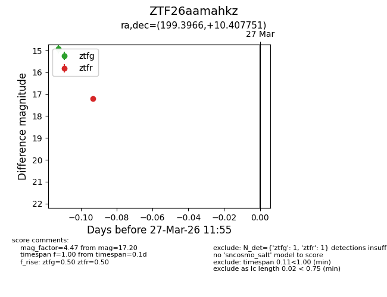
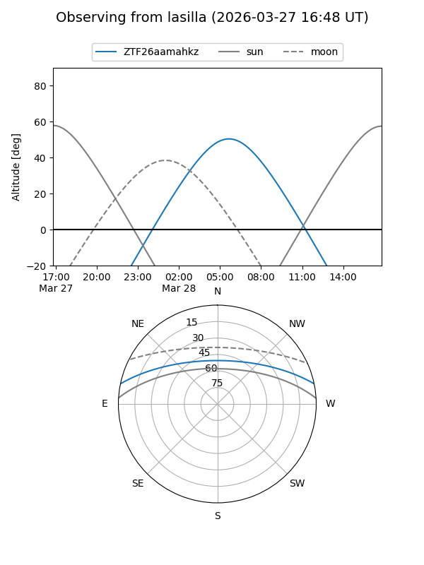
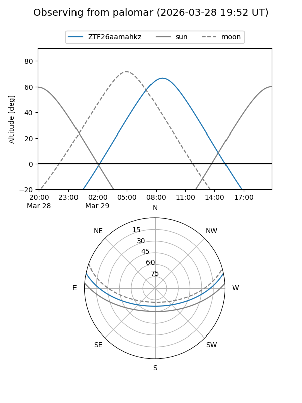

ZTF26aamahkz
Target ZTF26aamahkz at 2026-03-27 11:58
Aliases and brokers:
FINK: link
Lasair: link
ALeRCE: link
alt names
ZTF26aamahkz (ztf,fink_ztf)
Coordinates:
equatorial (ra, dec) = 199.3966,+10.40775
equatorial (HMS+DMS) = 13:17:35.18,+10:24:27.90
galactic (l, b) = (324.3958,+72.18109)
Flags:
Photometry:
last ztfg=14.92, ztfr=17.20
1 ztfg, 1 ztfr detections
Lightcurve

Visibility


Additional plots